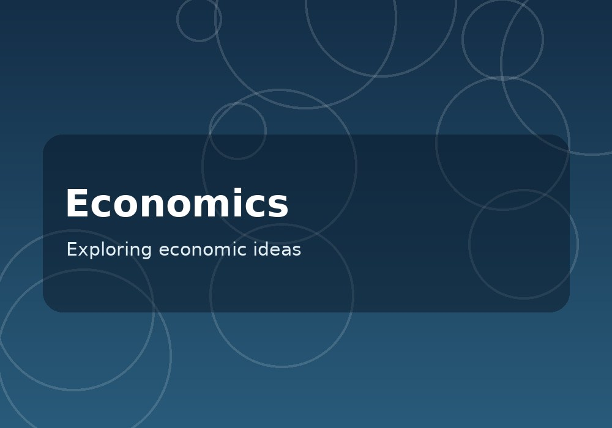
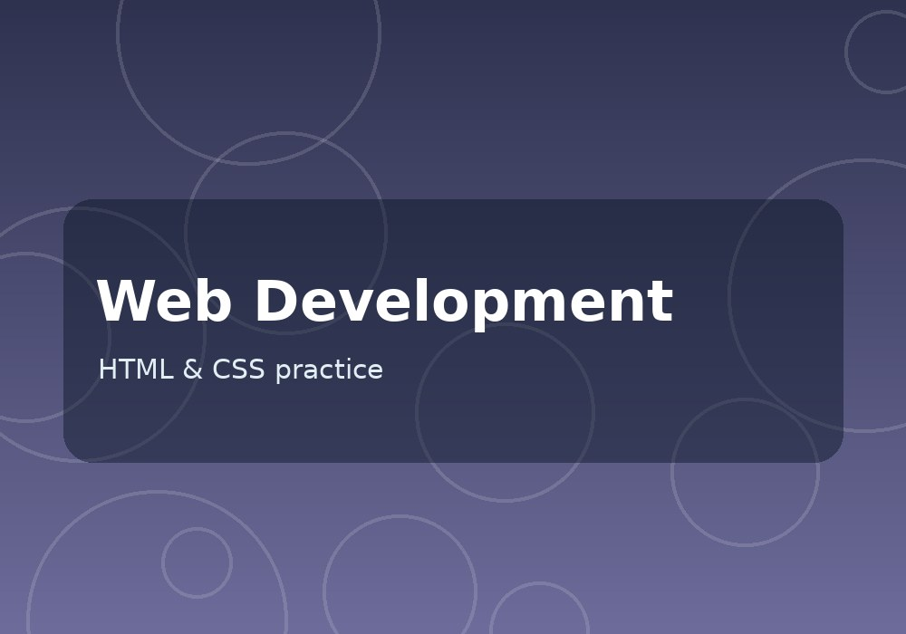
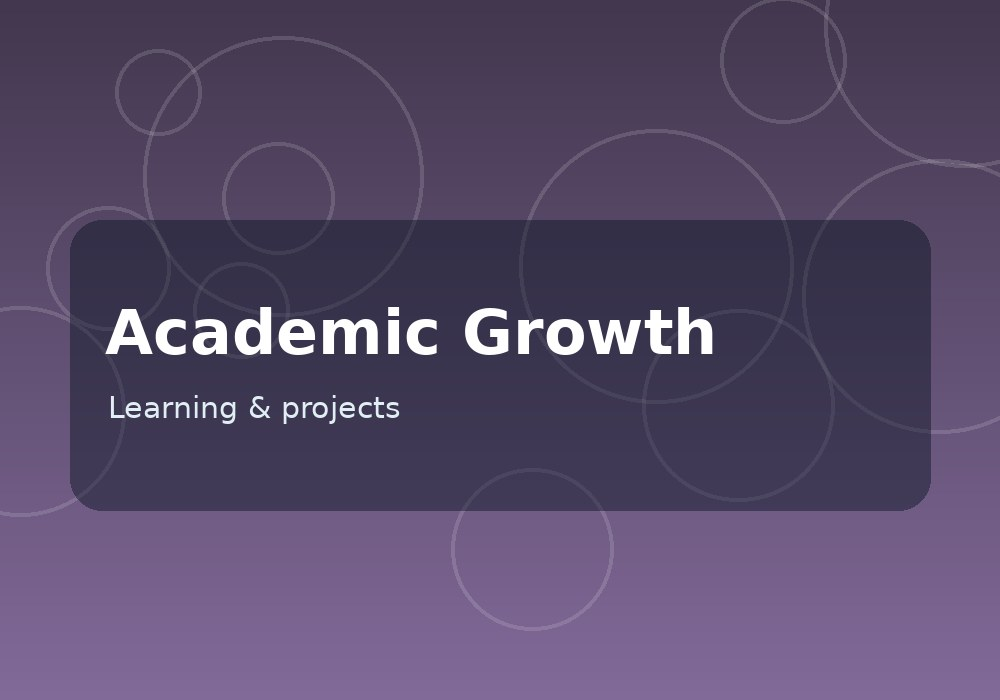

Henry Han
I am still exploring my interests in business, economics, and technology.
About Me
Hello, my name is Henry Han. I am currently an undergraduate student at University of California, Riverside, and my major is Undeclared. At this time, I am still thinking about what subject I want to study more deeply in the future. I think college is a good place for me to try different courses and understand what I am interested in. Although I do not have a decided major right now, I am trying to take my studies seriously and learn useful knowledge from each class. I hope this time can help me make a better decision about my future.
Some subjects I have interests in are economics, business, and technology. I think these subjects are connected with many things in our daily life. For example, economics can help us understand why people make certain decisions, and business is related to how a company works and provides services. Technology is also important because it changes how people study, work, and communicate. I am not an expert in these areas, but I want to know more about them. When I learn something new in class, I try to think about how it could be used in a real situation.
I am also learning some basic computer skills, including HTML and CSS. This personal website is one of my school assignments, and it is also an opportunity to practice making a website by myself. Before doing this project, I did not know much about how the different parts of a website work together. I am starting to understand that even a simple website needs planning and careful checking. Sometimes the code does not work in the way I expected, so I need to read it again and find the problem. This process can be difficult for me, but I believe it is useful experience.
In my college life, I want to improve not only my grades, but also my communication and time management. I know that studying at university requires more responsibility compared with high school. There are many assignments and things to prepare, and I still need to learn how to manage them better. I also want to work with other students and listen to their different ideas. I think being willing to ask questions is important, especially when I do not fully understand a topic. My goal is to become more independent and responsible during these years.
For my future, I am considering careers that may be related to business, economics, or technology, but I have not made my final choice yet. I would like to gain more experience through courses, student activities, and maybe internships when I am ready. I believe that practical experience can help me understand what kind of work fits me. This website is a small beginning for me to introduce myself and organize what I have learned. As I finish more projects and get more experience, I hope I can keep updating this website and make it better.
Experience & Learning
These are my study experiences and learning projects. I am still building my experience as a student.
Personal Website Project
Made a simple resume website for a class project. I practiced writing HTML, changing website content, and learning basic CSS.
University Coursework
Taking university classes and learning to manage assignments, read course materials, and understand new topics.
Independent Skill Development
Spending time learning how to use computer tools for school. I also want to understand more about economics and business.
Education
University of California, Riverside
Exploring academic interests in business, economics, and technology.
Portfolio
Here are four sample pictures for the website layout. I will replace them with my own school projects and activities.


